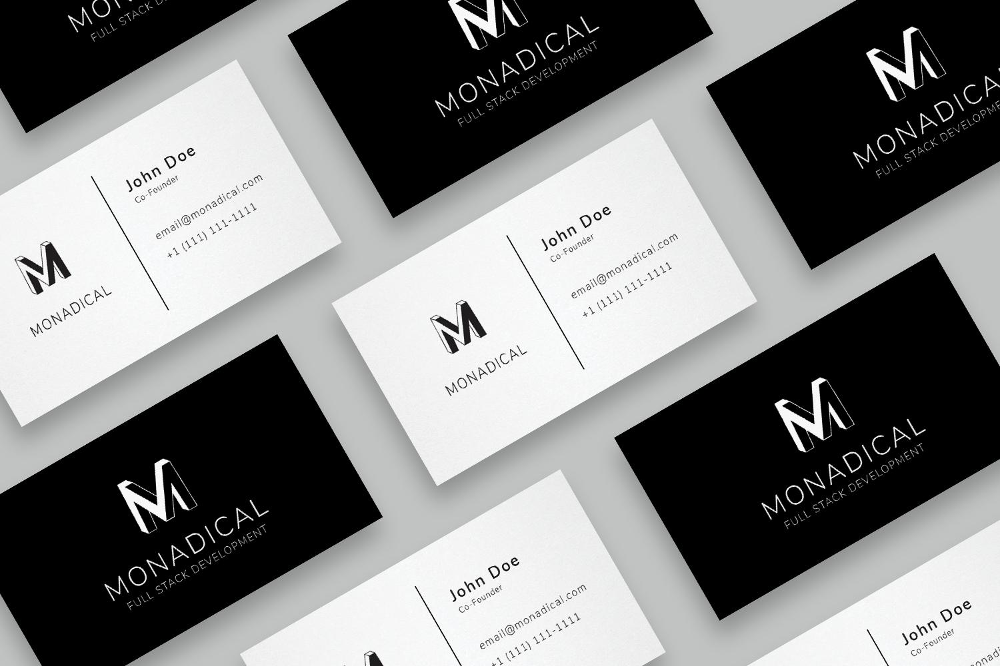
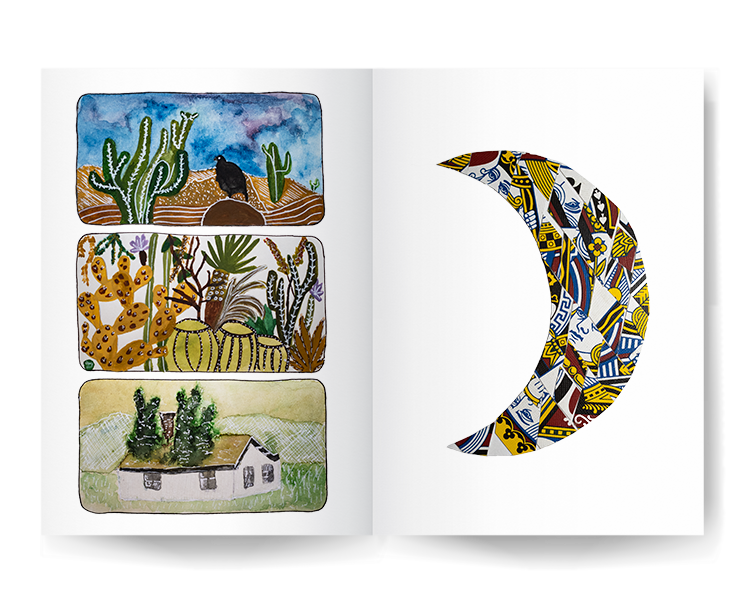
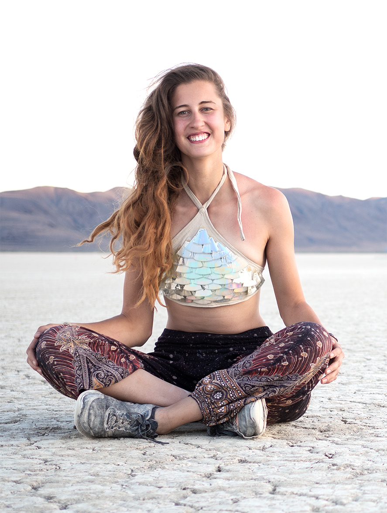

Portfolio
by Gabrielle Michaud
Over the past four years working full-time as a paramedic in Montreal, I've been exposed to a rich diversity of residential settings, igniting a growing interest in exploring alternative living arrangements to enhance accessibility and safety. Many of the emergencies I've responded to on the ambulance highlight the prospect of prevention through strategic measures. Enhancing fire evacuation routes, utilizing resilient building materials specifically designed to endure Québec's harsh weather conditions, and incorporating essential tools like ramps for individuals with reduced mobility are pivotal steps in averting potential crises. My goal is to comprehend every facet of design beyond the paramedic scope, delving into preventative measures for overall well-being and reimagining our way of living.
My inspiration is also rooted in my upbringing in Denmark. European architecture and Danish community-based urban design fascinate me. I aspire to pioneer an innovative approach to design in Canada, breaking away from generic standards. My aim is to incorporate meaningful ornamentation into designs that reflect and harmonize with the local surroundings. Authenticity holds great value for me; for instance, I believe in comprehensive restorations of historical buildings rather than merely preserving their facades. My dream is to build with purpose and draw insights from the environment, ensuring that creations today withstand the test of time. I want to explore alternative natural materials that offer longevity while remaining easily recyclable if needed.
While I may not have a formal academic background in design, my innate curiosity propels me to continually reflect on ways to enhance the aesthetic and functional aspects of our daily experiences. My overarching goal is fuelled by a commitment to improve accessibility, envisioning a future where design seamlessly integrates with the broader tapestry of our lives.
Web Development
I initially developed an interest in design through web development. My goal was to streamline company websites, making their information easily accessible and their navigation intuitive. However, I encountered limitations with web content management systems and the templates they offered. To overcome this, I chose to independently learn HTML, CSS, and JavaScript. Coding a webpage, like this portfolio, now takes me less than two hours, granting me complete control over every creative aspect.


Illustrations
Utilizing Adobe Illustrator has provided me with a versatile platform to experiment with bold colours in my drawings. The main objective of this project was to maximize visual impact through a minimalistic color palette. By focusing on complementary colors and avoiding overlaps, I aimed to create synergy between the two drawings.
Brand Design
The challenge of creating a business card holds a special allure for me, as it demands the artful compression of a wealth of information into a compact yet potent medium. This endeavor becomes a transformative process, where the tangible result emerges as more than just a card; it encapsulates the very essence and personality of the brand.
The mockup layout was created by CosmoStudio on Freepik.

Product Design
One of my main sources of inspiration comes from observing designs that I believe can be improved. For instance, a local bird sanctuary, Le Nichoir, introduced its own line of coffee a few years ago, but I found the initial design to be dull. Wanting to craft a more impactful version for the organization, I used Illustrator to illustrate a bold bird based on photos of the northern flicker. I opted for the distinctive font, Jaapokki, to allow the illustration to interact with the text. Subsequently, I developed a more sophisticated version featuring a duotone bird image, drawing inspiration from the background color of my first label.
Paintings
Using a white pen on my watercolour paintings has recently become my preferred technique for achieving a striking visual effect on paper. I'm captivated by the contrast of the white ink against the transparent layers of paint, allowing me to intricately add details and highlights to specific areas of my artwork. Recently, I've also delved into experimenting with collage techniques. I crafted the crescent moon on the right by repurposing face cards from an old deck—cutting them into diamond shapes and collaging them together.
The mockup layout was created by rawpixel.com on Freepik.

Jewelry
I grew up near a small town train station, finding joy in placing coins on the tracks and searching for them the next day. As time passed, I turned my flattened treasures into jewelry by drilling holes into them. Some still bear faint outlines of sailboats and maple leaves, preserving the subtle imprints of their past while giving them a new identity as distinctive, handcrafted accessories. With the penny being out of production, transforming it into wearable art felt like the best way to give it a second life. As a kid, I also loved collecting seaglass. I've always marveled at nature's ability to transform discarded items into objects of beauty, and recently I wanted to highlight that transformative power by creating pendants with the rounded glass.
Pottery
I believe that our everyday tools should not only be practical but also beautiful. Art should transcend mere admiration; it should be an immersive experience. My dream is to craft a complete dining set from clay, transforming mundane aspects of life into sources of joy. The pieces showcased here mark the beginning of this dream. I shaped and trimmed them over four sessions and chose to dip each in two different glazes to evoke a sense of fluidity.
Clothing Design
A few years back, I took part in an event centered around the concept of metamorphosis. My aim was to turn an outdated item into wearable art before the event, and I achieved this by creating a top from cut-up CDs arranged to resemble fish scales. I sewed the fabric to fit my body and meticulously cut the CDs into triangles, securing them with glue. The process took longer than expected due to the reflective layer peeling away. Since then, I've honed my sewing skills by crafting numerous aprons for friends and family.
